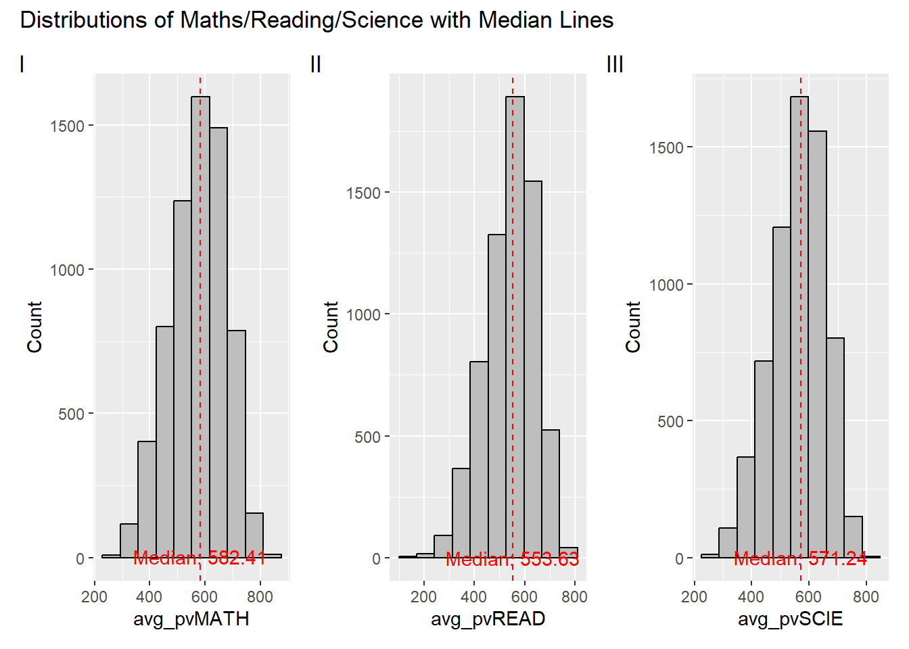
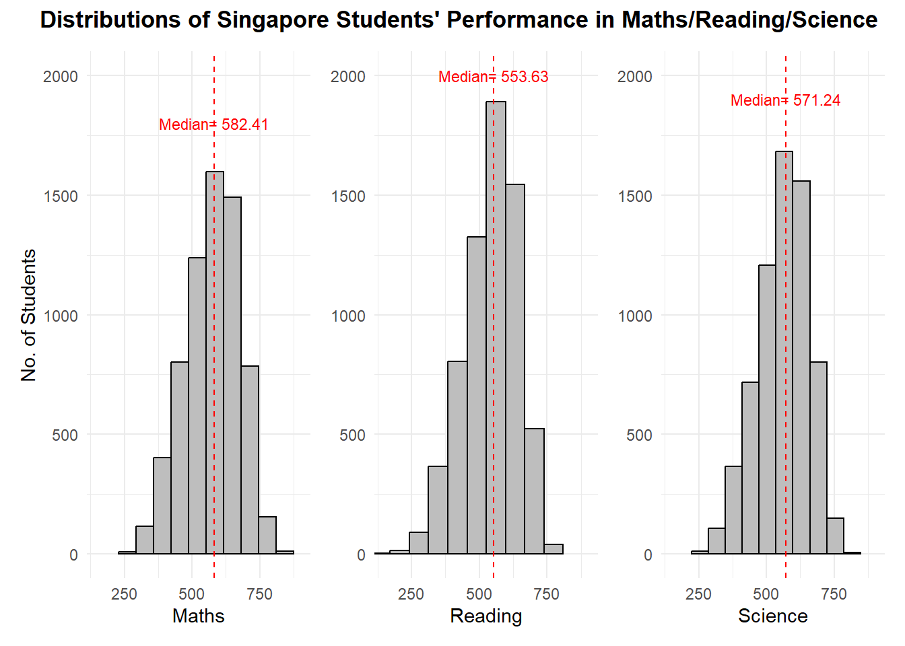
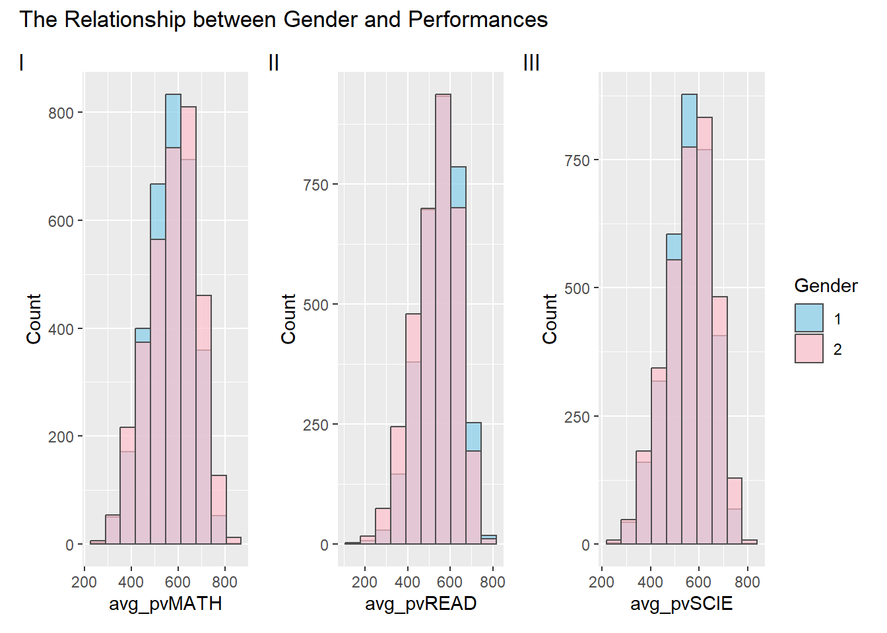
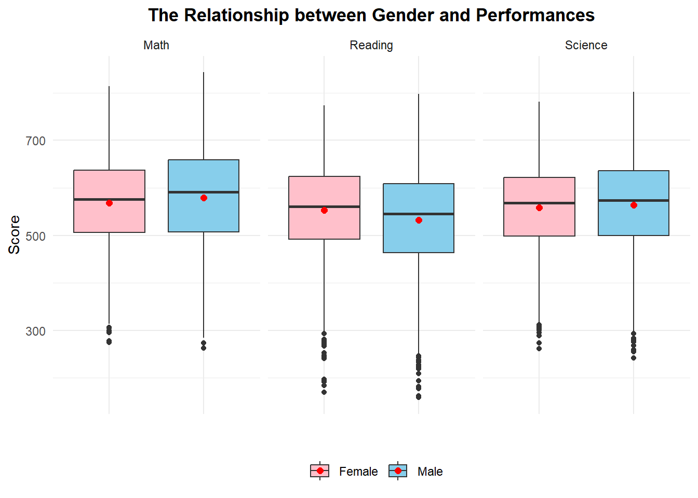
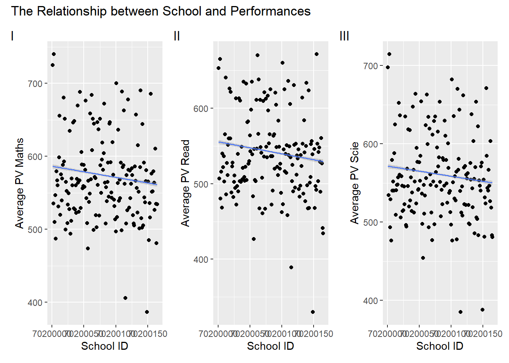
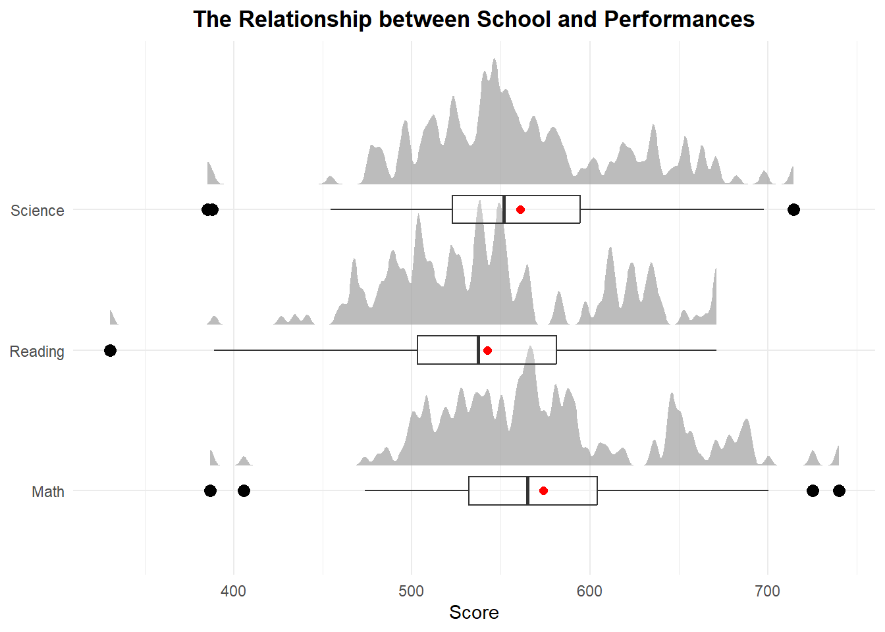

pacman::p_load(tidyverse, haven, ggplot2, patchwork, dplyr)Take-home Exercise 2: DataVis Makeover
1. Overview
The objective of this exercise is to enhance the original visualization prepared by peer in Take-home Exercise 1. The peer’s submission will be critiqued concerning clarity and aesthetics. The original design will be remade by using ggplot2, ggplot2 extensions and tidyverse packages.
2. Getting Started
The data preparation procedures undertaken by the original author of the graphs are outlined here for easy reference.
2.1 Installing and loading the required R packages
2.2 Data Preparation
1. Import PISA data into R environment:
stu_qqq <- read_sas("data/cy08msp_stu_qqq.sas7bdat")2. Filter out Singapore students in the data:
stu_qqq_SG <- stu_qqq %>%
filter(CNT =="SGP")
write_rds(stu_qqq_SG,
"data/stu_qqq_SG.rds")
stu_qqq_SG <-
read_rds("data/stu_qqq_SG.rds")4. Calculate the average of PV1-10 Maths/Read/Science, representing each student’s ability to perform maths/Read/Science
Related_math_read_scie_data <- Related_math_read_scie_data %>%
mutate(avg_pvMATH = rowMeans(select(., ends_with("Math")), na.rm = TRUE))
Related_math_read_scie_data <- Related_math_read_scie_data %>%
mutate(avg_pvREAD = rowMeans(select(., ends_with("READ")), na.rm = TRUE))
Related_math_read_scie_data <- Related_math_read_scie_data %>%
mutate(avg_pvSCIE = rowMeans(select(., ends_with("SCIE")), na.rm = TRUE))
Related_math_read_scie_data %>%
select(CNTSCHID, CNTSTUID,avg_pvMATH, avg_pvREAD, avg_pvSCIE) %>%
head(5)# A tibble: 5 × 5
CNTSCHID CNTSTUID avg_pvMATH avg_pvREAD avg_pvSCIE
<dbl> <dbl> <dbl> <dbl> <dbl>
1 70200052 70200001 605. 667. 640.
2 70200134 70200002 690. 628. 672.
3 70200112 70200003 677. 583. 660.
4 70200004 70200004 401. 361. 344.
5 70200152 70200005 436. 476. 479.3. Visualization Critique and Remake
3.1 Maths/Read/Science Distributions
3.1.1 Original Design
Code
p1 <- ggplot(data=Related_math_read_scie_data, aes(x = avg_pvMATH)) +
geom_histogram(bins=10,
boundary = 100,
color="black",
fill="grey") +
geom_vline(aes(xintercept = median(avg_pvMATH)), color = "red", linetype = "dashed") +
annotate("text", x = median(Related_math_read_scie_data$avg_pvMATH), y = 30,
label = paste("Median:", round(median(Related_math_read_scie_data$avg_pvMATH), 2)),
vjust = 1, color = "red") +
labs(y = "Count")
p2 <- ggplot(data=Related_math_read_scie_data, aes(x = avg_pvREAD)) +
geom_histogram(bins=10,
boundary = 100,
color="black",
fill="grey") +
geom_vline(aes(xintercept = median(avg_pvREAD)), color = "red", linetype = "dashed") +
annotate("text", x = median(Related_math_read_scie_data$avg_pvREAD), y = 30,
label = paste("Median:", round(median(Related_math_read_scie_data$avg_pvREAD), 2)),
vjust = 1, color = "red") +
labs(y = "Count")
p3 <- ggplot(data=Related_math_read_scie_data, aes(x = avg_pvSCIE)) +
geom_histogram(bins=10,
boundary = 100,
color="black",
fill="grey") +
geom_vline(aes(xintercept = median(avg_pvSCIE)), color = "red", linetype = "dashed") +
annotate("text", x = median(Related_math_read_scie_data$avg_pvSCIE), y = 30,
label = paste("Median:", round(median(Related_math_read_scie_data$avg_pvSCIE), 2)),
vjust = 1, color = "red") +
labs(y = "Count")
p1 + p2 + p3 +
plot_layout(guides = "collect") +
plot_annotation(title = "Distributions of Maths/Reading/Science with Median Lines", tag_levels = "I")
3.1.2 Clarity
Data Representation - The selection of a histogram along with median lines is a good approach as it effectively shows the distribution of the students’ performance among various subjects.
Title - The main title appears to be informative and provides a clear indication of the graph’s purpose. However, it can be more concise while still retaining sufficient details, such as “Distributions of Singapore Students’ Performance in Maths/Reading/Science”. Furthermore, the subtitles “I”, “II”, “III” are meaningless and redundant, given the presence of clear labels on the x-axis.
Labels - Consider using distinct labels for graph axes instead of using the same labels as the column names, i.e. “avg_pvMATH”, “avg_pvREAD”, and “avg_pvSCIE” for x-axis, and “count” for y-axis, which may lack clarity for users when interpreting charts.
Median line annotations - Placing the median value at the bottom where it intersects with the x-axis, creates a readability issue.
Scale consistency - The inconsistency in the y-axis scale compromises the clarity of the graph, hindering accurate data interpretation. Varying scales distort visual perception, making it challenging to compare across different subjects. Maintaining a consistent y-axis scale is crucial for improved clarity.
3.1.3 Aesthetics
The use of grey for both the background and the histogram results in a lack of visual contrast. Enhancing the background can elevate the overall aesthetics, providing a cleaner and more professional appearance.
The alignment of the graph title is not centered, creating a lack of symmetry and balance. Centering the title would enhance the aesthetic appeal and improve the overall professional look of the graph.
3.1.4 Remake
Code
# Calculate mean and median for maths
maths_mean <- mean(Related_math_read_scie_data$avg_pvMATH)
maths_median <- median(Related_math_read_scie_data$avg_pvMATH)
# Plot the histogram of maths
p1 <- ggplot(data=Related_math_read_scie_data, aes(x = avg_pvMATH)) +
geom_histogram(bins=10,
boundary = 100,
color="black",
fill="grey") +
geom_vline(aes(xintercept = maths_median), color = "red", linetype = "dashed") +
annotate("text", x = maths_median, y = 1800, label = paste("Median=", round(maths_median, 2)), size=3, color = "red") +
coord_cartesian(xlim = c(150, 900),
ylim = c(0, 2000)) +
labs(y = "No. of Students", x = "Maths") +
theme_minimal()
# Calculate mean and median for reading
read_mean <- mean(Related_math_read_scie_data$avg_pvREAD)
read_median <- median(Related_math_read_scie_data$avg_pvREAD)
# Plot the histogram of reading
p2 <- ggplot(data=Related_math_read_scie_data, aes(x = avg_pvREAD)) +
geom_histogram(bins=10,
boundary = 100,
color="black",
fill="grey") +
geom_vline(aes(xintercept = read_median), color = "red", linetype = "dashed") +
annotate("text", x = read_median, y = 2000, label = paste("Median=", round(read_median, 2)), size=3, color = "red") +
coord_cartesian(xlim = c(150, 900),
ylim = c(0, 2000)) +
labs(x = "Reading") +
theme_minimal() +
theme(axis.title.y = element_blank())
# Calculate mean and median for reading
sci_mean <- mean(Related_math_read_scie_data$avg_pvSCIE)
sci_median <- median(Related_math_read_scie_data$avg_pvSCIE)
# Plot the histogram of science
p3 <- ggplot(data=Related_math_read_scie_data, aes(x = avg_pvSCIE)) +
geom_histogram(bins=10,
boundary = 100,
color="black",
fill="grey") +
geom_vline(aes(xintercept = sci_median), color = "red", linetype = "dashed") +
annotate("text", x = sci_median, y = 1900, label = paste("Median=", round(sci_median, 2)), size=3, color = "red") +
coord_cartesian(xlim = c(150, 900),
ylim = c(0, 2000)) +
labs(, x = "Science") +
theme_minimal() +
theme(axis.title.y = element_blank())
p1 + p2 + p3 +
plot_layout(guides = "collect") +
plot_annotation(title = "Distributions of Singapore Students' Performance in Maths/Reading/Science",
theme = theme(plot.title = element_text(hjust = 0.75,face = "bold")))
3.2 The Relationship between Gender and Performances
3.2.1 Original Design
Code
p4 <- ggplot(data = Related_math_read_scie_data, aes(x = avg_pvMATH, fill = factor(ST004D01T))) +
geom_histogram(bins = 10, color = "grey30", position = "identity", alpha = 0.7) +
labs(x = "avg_pvMATH", y = "Count", fill = "Gender") +
scale_fill_manual(values = c("skyblue", "pink"))
p5 <- ggplot(data = Related_math_read_scie_data, aes(x = avg_pvREAD, fill = factor(ST004D01T))) +
geom_histogram(bins = 10, color = "grey30", position = "identity", alpha = 0.7) +
labs(x = "avg_pvREAD", y = "Count", fill = "Gender") +
scale_fill_manual(values = c("skyblue", "pink"))
p6 <- ggplot(data = Related_math_read_scie_data, aes(x = avg_pvSCIE, fill = factor(ST004D01T))) +
geom_histogram(bins = 10, color = "grey30", position = "identity", alpha = 0.7) +
labs(x = "avg_pvSCIE", y = "Count", fill = "Gender") +
scale_fill_manual(values = c("skyblue", "pink"))
p4 + p5 + p6 +
plot_layout(guides = "collect") +
plot_annotation(title = "The Relationship between Gender and Performances", tag_levels = "I")
3.2.2 Clarity
Just like the Maths/Read/Science Distributions discussed above, there are opportunities for enhancements in sub titles, labels, and scale consistency. Additionally, two more points require attention.
Data Representation - The interpretation of the histogram filled with colors for different genders appears confusing, as the genders are overlapped instead of being stacked or grouped. Moreover, the choice of histogram may not be clear enough to interpret the relationship between gender and performance. A boxplot or violin plot would be more suitable for illustrating the distribution of a numeric variable across different categories. This alternative provides information about central tendency, spread, and potential outliers, offering a clearer representation of the data.
Legend annotations - The legend annotations should be improved for better clarity. Instead of using numerical values (1 and 2), more informative labels such as “Male” and “Female” would enhance the interpretability of the graph, providing a more user-friendly and intuitive representation of the gender categories.
3.2.3 Remake
Code
# select variables of interest and rename - gender and avg score
data_gender <- Related_math_read_scie_data %>%
select(ST004D01T,avg_pvMATH,avg_pvREAD,avg_pvSCIE)
data_gender <- data_gender %>%
rename('Gender'='ST004D01T',
'Math'='avg_pvMATH',
'Reading'='avg_pvREAD',
'Science'='avg_pvSCIE')
# change data type for Gender
data_gender$Gender <- as.factor(data_gender$Gender)
# recode Gender
data_gender <- data_gender %>%
mutate(Gender=(recode(Gender, '1'="Female",
'2'="Male")))
# reshape the dataset from wide to long format
data_gender <- gather(data=data_gender, key = "Subject", value = "Score", 2:4)
# Create the boxplots
ggplot(data_gender,
aes(y = Score, x= Gender, fill = Gender)) +
geom_boxplot() +
stat_summary(geom = "point",
fun.y = "mean",
colour ="red",
size=2)+
scale_fill_manual(values = c("Female" = "pink", "Male" = "skyblue"))+
facet_wrap(~ Subject) +
labs(y = "Score",
x = "",
title = "The Relationship between Gender and Performances")+
theme_minimal()+
theme(
legend.position = "bottom",
legend.title = element_blank(),
axis.text.x = element_blank(),
plot.title = element_text(hjust = 0.5, face = "bold")
)
3.3 The Relationship between School and Performances
3.3.1 Original Design
To get a clearer picture of the impact of school on the performance, the original design firstly calculated the average score for each school.
Code
# compute the mean score of students for each school
Related_math_read_scie_data <- Related_math_read_scie_data %>%
group_by(CNTSCHID) %>%
mutate(avg_pvMATH_school = mean(avg_pvMATH, na.rm = TRUE))
Related_math_read_scie_data <- Related_math_read_scie_data %>%
group_by(CNTSCHID) %>%
mutate(avg_pvREAD_school = mean(avg_pvREAD, na.rm = TRUE))
Related_math_read_scie_data <- Related_math_read_scie_data %>%
group_by(CNTSCHID) %>%
mutate(avg_pvSCIE_school = mean(avg_pvSCIE, na.rm = TRUE))
Related_math_read_scie_data %>%
select(CNTSCHID, CNTSTUID,avg_pvMATH_school, avg_pvREAD_school, avg_pvSCIE_school) %>%
head(5)# A tibble: 5 × 5
# Groups: CNTSCHID [5]
CNTSCHID CNTSTUID avg_pvMATH_school avg_pvREAD_school avg_pvSCIE_school
<dbl> <dbl> <dbl> <dbl> <dbl>
1 70200052 70200001 581. 598. 585.
2 70200134 70200002 523. 487. 519.
3 70200112 70200003 588. 549. 581.
4 70200004 70200004 510. 480. 494.
5 70200152 70200005 485. 468. 481.Code
# create the plot
p7 <- ggplot(data = Related_math_read_scie_data,
aes(x = CNTSCHID,
y = avg_pvMATH_school)) +
geom_point() +
geom_smooth(formula = y~x, method = lm,
size = 0.5) +
labs(x = "School ID", y = "Average PV Maths")
p8 <- ggplot(data = Related_math_read_scie_data,
aes(x = CNTSCHID,
y = avg_pvREAD_school)) +
geom_point() +
geom_smooth(formula = y~x, method = lm,
size = 0.5) +
labs(x = "School ID", y = "Average PV Read")
p9 <- ggplot(data = Related_math_read_scie_data,
aes(x = CNTSCHID,
y = avg_pvSCIE_school)) +
geom_point() +
geom_smooth(formula = y~x, method = lm,
size = 0.5) +
labs(x = "School ID", y = "Average PV Scie")
p7 + p8 + p9 +
plot_layout(guides = "collect") +
plot_annotation(title = "The Relationship between School and Performances", tag_levels = "I")
3.3.2 Clarity
Data Representation - The School ID, representing each individual school, should be considered as discrete data rather than continuous. Consequently, opting for a scatter plot is not a suitable method for understanding the influence of school on performance. Histograms, density plots, or boxplots (including violin plots) offer more effective means of visualizing the distribution and variability of a single variable.
Title - The subtitles “I”, “II”, “III” are meaningless and redundant, given the presence of labels on the y-axis.
Labels - The school ID labels on the x-axis overlap, causing a readability issue.
Axis annotations - The annotations for the x-axis appear three times, resulting in redundancy. Additionally, the positioning of annotations on the y-axis is unclear and hampers readability.
Scale consistency - The inconsistency in the y-axis scale compromises the clarity of the graph, hindering accurate data interpretation. Varying scales distort visual perception, making it challenging to compare across different subjects. Maintaining a consistent y-axis scale is crucial for improved clarity.
3.3.3 Remake
Code
pacman::p_load(ggdist)
# select variables of interest and rename - school ID and avg score
data_school <- Related_math_read_scie_data %>%
select('CNTSCHID','avg_pvMATH_school', 'avg_pvREAD_school', 'avg_pvSCIE_school')
data_school <- data_school %>%
rename('School_ID'='CNTSCHID',
'Math'='avg_pvMATH_school',
'Reading'='avg_pvREAD_school',
'Science'='avg_pvSCIE_school')
# change of data type for school ID
data_school$School_ID <- as.character(data_school$School_ID)
# reshape the dataset from wide to long format
data_school <- gather(data=data_school, key = "Subject", value = "Avg_Score", 2:4)
# create the plot
ggplot(data_school,
aes(x = Avg_Score,
y = Subject)) +
stat_halfeye(adjust = .5,
justification = -0.2,
.width = 0,
point_colour = NA,
alpha = .75) +
geom_boxplot(width = .20,
alpha = 0.25,
outlier.colour = "black",
outlier.size = 3) +
stat_summary(geom = "point",
fun.y = "mean",
colour ="red",
size=2) +
labs(x = "Score",
y = NULL,
title = "The Relationship between School and Performances")+
theme_minimal()+
theme(legend.position = "none",
plot.title = element_text(hjust = 0.5, face = "bold"))
4. Learning Points
Completing Take-home Exercise 2 reinforced key lessons from Exercise 1. I learned that there’s no one-size-fits-all approach to visualization; success lies in clear, aesthetic, and meaningful communication. Exploring classmates’ works brought fresh ideas for improvement, emphasizing the value of continuous learning.
Moreover, Exercise 2 highlighted the importance of tailoring visualizations to the audience. Analyzing efficient coding practices from peers deepened my understanding and improved my ggplot skills, enabling the creation of more insightful charts. This exercise not only enhanced my technical abilities but also emphasized the crucial nuances for effective data visualization.